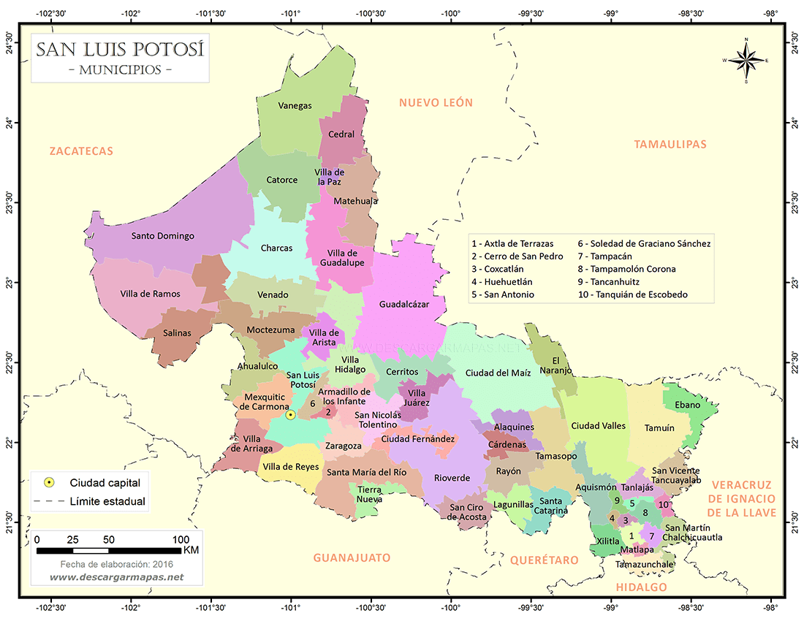
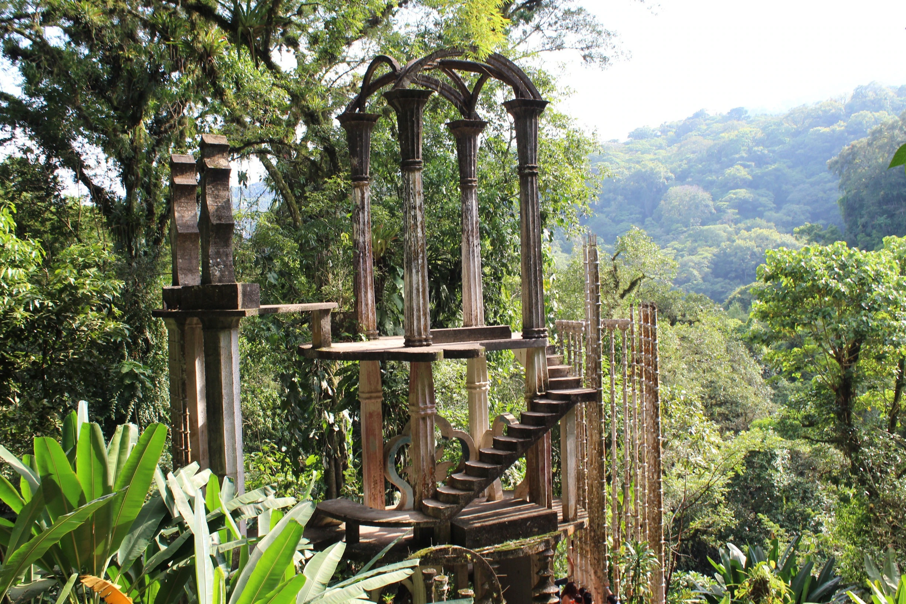
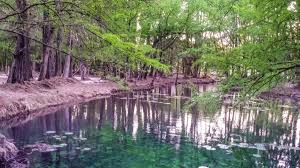
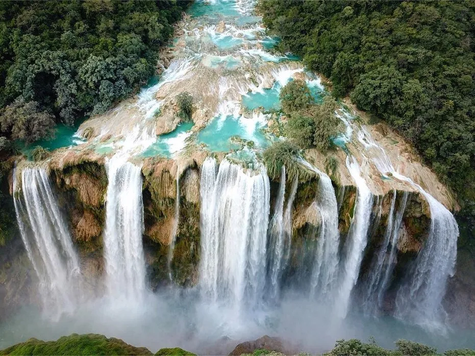

Examen
Inicio
Programacion Web I
Examen Practico Pracial 1
Profesora: M.C. Imelda Deyanira Hernandez Martinez
Alumno: Jose Fernando Arcos Mendez
Top Destinations


4.3
Xilitla

4.8
Laguna de la Media Luna

4.2
Aquismón
4.7
Puente de Dios
Distfuta Nuestras Cascadas